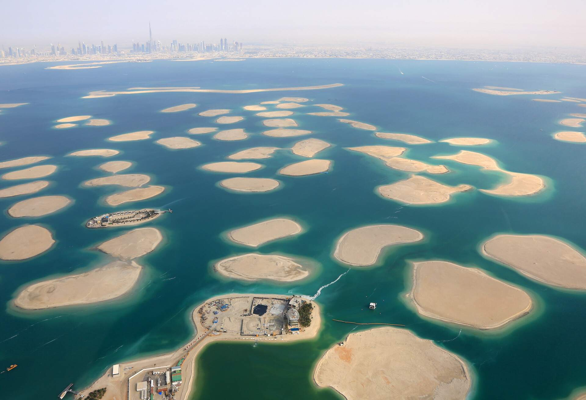
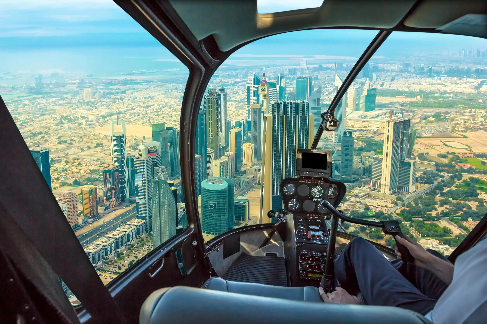
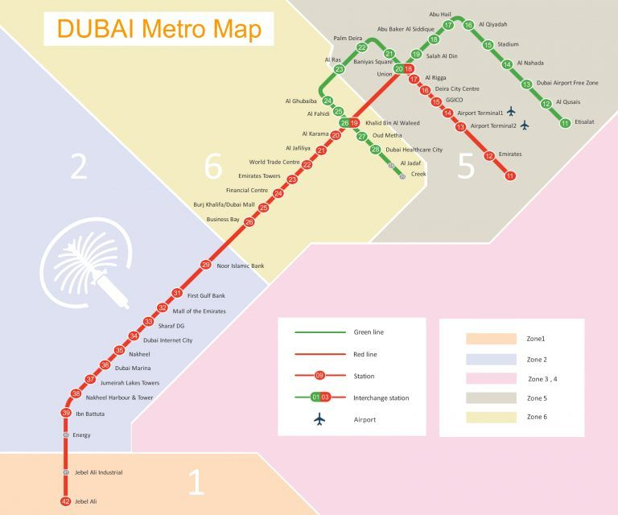
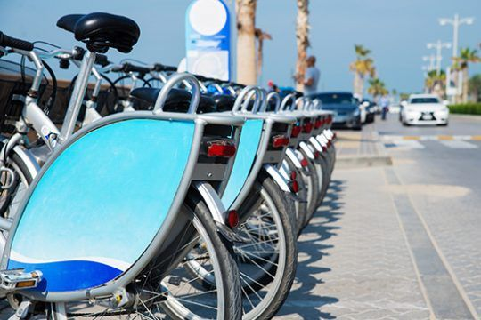
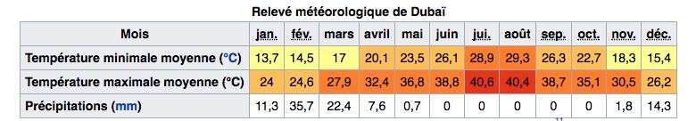

Vous partez bientôt, mais vous ne savez pas que faire à Dubaï ?
Pas de panique ! Vous êtes au bon endroit !
On nous pose souvent la question sur notre blog voyage,
alors
pour y répondre dans le détail, nous vous avons préparé un article complet sur le sujet. Vous allez
découvrir toutes les activités à ne surtout pas manquer si vous venez visiter Dubaï.
Votre guide complet pour votre prochain voyage à Dubaï !
Comment parler de Dubaï sans parler du Burj Khalifa, le building le plus haut du monde avec ses 828 mètres. Il vous offrira une vue incroyable sur la ville dorée. C'est réellement l'activité phare lorsqu'on part en voyage à Dubaï pour la première fois.

À l’heure où j’écris ces lignes, cette tour est encore la plus haute de la planète, mais elle pourrait bien être dépassée prochainement… La bonne nouvelle, c’est que cela sera probablement une autre tour de Dubaï qui s’emparera de ce record. En effet, la Dubaï Creek Tower, qui devait ouvrir ses portes en 2021, mais dont la construction a pris un peu de retard, devrait culminer à plus d’un kilomètre de hauteur !
Un billet d'entrée vous permettra de monter au 124e et au 125e étage du gratte-ciel et de profiter d'une vue panoramique sur la ville de Dubaï. Si vous venez le jour J pour avoir des places, il y a de fortes chances que ce ne soit pas possible.
Visiter le Burj Khalifa, c'est l'activité phare de Dubaï, il y a beaucoup de monde qui souhaite découvrir cette tour mythique, tous les jours de la semaine. Un conseil : réservez au minimum pour le lendemain afin de ne pas payer le prix fort : les tarifs vont de 125 AED à plus de 400 AED selon l’affluence et le moment où vous réservez. Si vous réservez pour le jour même sur place, vous payerez beaucoup plus cher que le tarif habituel.
Si vous voulez, vous pouvez même réserver votre place sur Tiqets au tarif approximatif de 43 €. Nous avons utilisé cette technique pour notre visite du Burj Khalifa. Nous aurions dû payer le double du prix de la réservation si nous n’avions pas réservé pour pouvoir monter le jour même. Et quand vous voyez le jour même la file à l’intérieur pour acheter un billet… vous ne regrettez pas votre achat ! Autre avantage, en achetant votre ticket pour le Burj Khalifa en ligne, vous payez en euros, et vous évitez d’éventuels frais bancaires.
Il existe un billet VIP pour monter au 148e étage (bien sûr avec ce billet VIP vous pourrez aussi aller au 124e et 125e étage). Vous aurez accès à une plateforme très calme où il y a vraiment peu de monde (maximum 50 personnes) et vous aurez une collation (café, thé, gâteaux). Pour réserver ce billet, c’est en ligne directement sur le même site au prix de 110 €.
Pour réserver votre billet VIP pour le 148e étage, cliquez ici
C’est un spectacle magique et surtout gratuit. Les fontaines sont au pied du Burj Khalifa, allez-y le soir pour voir le spectacle avec son et lumière sur des musiques arabes ou sur des grands succès occidentaux comme Con te partiro, le show est vraiment sympa. Là encore, c’est le plus gros spectacle de fontaines au monde avec pas loin de 85 000 litres d’eau.
Vous pouvez assister à ce spectacle plusieurs fois par jour. Le spectacle a lieu tous les jours de la semaine, toutes les 30 minutes de 18h à 23h. Après le spectacle, c'est le moment idéal pour se restaurer dans l'un des nombreux restaurants du Dubaï Mall.
Si vous voulez découvrir ce spectacle de fontaines depuis un point de vue unique : directement dans l'eau. Vous pourrez le faire à l’occasion d’un tour en bateau traditionnel sur le Burj Lake, dans une embarcation traditionnelle. C’est le meilleur moyen pour profiter au plus près de cet incroyable spectacle son et lumière. Pour ce tour, comptez environ 20 € par personne.
Pour réserver votre billet, cliquez ici

Vous ne pouvez pas non plus visiter Dubaï sans visiter Dubaï Frame ! Son est lié au fait que sa structure ressemble à un cadre photo, pour le contempler, vous devrez vous rendre dans le Zabeel Park.
Mais vous pourrez aussi rentrer à l'intérieur du cadre et admirer une vue surprenante de la ville à 360° sur la passerelle à 150 mètres de hauteur. Celle-ci mesure 93 mètres en longueur et est complètement faite de vitre incassable.
Puisque Dubaï Frame est un peu excentré, il vous permettra de voir d'un côté le vieux Dubaï, Deira et tout le patrimoine historique de la ville. De l'autre Downtown Dubaï que vous connaissez pour ses excès et ses coups de folie. Au rez-de-chaussée vous trouverez d'ailleurs des expositions représentant les 2 faces de Dubaï.
Il n'est pas possible de trouver des billets pour Dubaï Frame sur des plateformes internationales mais vous en trouverez directement sur le site officiel du lieu.
Allez voir l’aquarium de Dubaï car il vaut le détour avec ses nombreuses espèces et son tunnel qui vous plongera au cœur de l’océan. C'est une expérience vraiment sympa, surtout si vous avez des enfants.
Le tunnel sous-marin est vraiment surprenant et il plaira autant aux grands qu’aux petits. Une très belle expérience dans un bâtiment emblématique de Dubaï. Selon moi, il faut absolument visiter et découvrir la plus grande paroi transparente du monde pendant votre séjour à Dubaï.
Pour l’aquarium, vous pouvez réserver vos billets en avance, le tarif est d’environ 30 €. Cela vous évitera la longue queue une fois sur place.
Après plusieurs jours dans la ville, vous aurez peut-être besoin de vous ressourcer dans la nature. Dubaï à la réponse à tout : rendez-vous au Dubaï Miracle Garden et au Dubaï Butterfly Garden. Le Miracle Garden est le jardin fleuri le plus grand du monde et se situe dans le quartier de Barsha. Pour y accéder, je vous conseille mon billet coupe-file à environ 30 € par personne.
Cliquez ici pour résever vos billets au Miracle Garden
Dans le jardin, vous découvrirez plus de 150 millions de fleurs toutes plus belles les unes que les autres. Le tout dans une atmosphère féérique puisque vous pourrez notamment y croiser Mickey Mouse et Minnie. Plus improbable, vous y verrez aussi une réplique d'un Airbus A380 recouvert de fleurs.
Horaires d'ouverture : Tous les jours à partir de 9h jusqu'à 21h ou 22h le week-end, du mois de novembre à mai.
Par la même occasion, je vous recommande de faire un tour au Butterfly Garden qui se situe juste à côté du Miracle Garden. Ici, vous trouverez pas moins de 10 000 sortes de papillons différents.
Voici selon moi, le deuxième musée dans lequel il faut absolument se rendre à Dubaï : le musée du futur, ouvert depuis cette année (2022). Le bâtiment qui abrite ce musée est d'ailleurs l'un des plus beaux musées du monde par son architecture unique.
Dans le musée du futur, vous explorerez notamment des expositions interactives et découvrirez de nouveaux concepts encore méconnus dans les domaines de l'environnement et de la santé. Contrairement au musée de Dubaï, je vous conseille cette fois-ci de réserver vos billets pour le musée en avance. Le prix du billet est d'environ 40 € par personne.
Cliquez ici pour réserver vos billets pour le Musée du Futur
Puisque le prix est assez conséquent, je vous conseille de jeter un oeil au prix des pass Dubaï qui pourront parfois être plus avantageux, notamment si vous souhaitez aussi visiter d'autres lieux incontournables de la ville !
Voici encore un parc qui risque de plaire à toute la famille : Dubaï Garden Glow est un parc d'illuminations, ici on laisse tomber les sensations fortes. Vous en prendrez plein les yeux par la beauté du spectacle, en plus de cela, les luminaires que vous pouvez observer sont entièrement fabriqués à partir de matériaux recyclés.
Pour une entrée à environ 20 €, vous aurez accès aux illuminations mais aussi au Dubaï Dinosaur Park. Enfin, pour 10 € supplémentaires, vous aurez aussi accès au Ice Park, à l'intérieur de Garden Glow. Vous y découvrirez des sculptures et des statues en glace. Le parc est ouvert de l'automne au printemps en fin de journée : de 16h à minuit.
Comme vous vous y rendrez sûrement en soirée, sachez que vous pourrez trouver de quoi vous restaurer sur place, il y a également quelques places pour pique-niquer.
Cliquez ici pour réserver votre billet au Garden Glow
The World Islands où les îles du monde sont un archipel de 300 îles artificielles qui prennent la forme de la carte du monde, voilà pour l'origine de son nom. Elles se situent a seulement 4 km au large de Dubaï.
Lorsque ce projet sera clôturé, les îles accueilleront elles aussi des touristes et Dubaïotes puisqu'elles hébergeront nombre d'hôtels, de villas et de nouveaux lotissements.
Pour l'instant, le seul moyen d'observer ces îles est de prendre un peu de hauteur : soit lorsque vous arriverez à Dubaï en avion via l'aéroport de Dubaï ou si vous décidez de faire un survol en hélicoptère de Dubaï.
Pour l'instant une seule des îles est achevée, celle représentant le Liban. Pour le reste, il va falloir attendre un peu plus longtemps car les travaux sont pour l'instant à l'arrêt puisque certaines des îles seraient en train de s'affaisser. Dubaï manque donc de financement pour relancer les travaux.
La ville de Dubaï a été construite sur le désert, en sortant de la ville, vous n’aurez qu’à rouler quelques kilomètres et il n’y aura plus que du sable autour de vous. C'est l'occasion idéale pour vous de partir une demi-journée en safari en 4 x 4 dans les dunes dans le désert de Dubaï.
Les sensations sont garanties ! Et si vous voulez surtout découvrir le désert et que vous ne recherchez pas forcément l’adrénaline, pas d'inquiétude ! Le conducteur adapte bien sûr sa conduite en fonction des passagers et de leurs préférences.

Durant le safari dans le désert, vous pourrez même vous initier au « sandboarding », le surf sur les dunes de sable. Un vrai régal ! Autre activité comprise dans le safari : vous pourrez également faire une petite excursion à dos de chameau. Le soir, vous vivrez un coucher de soleil dans le désert, et dans un camp bédouin typique, on vous servira un barbecue autour d’un spectacle de derviche tourneur et de danse du ventre. Vous pourrez également fumer la chicha et pourquoi pas vous faire un tatouage au henné. Le départ est possible tous les jours à partir de 15 h 00, et le retour à l’hôtel se fera aux alentours de 21 h-22 h. Son prix ? Environ 110 € par personne.
Réservez vos billets pour le safari 4x4 en cliquant ici
Voilà une attraction que nous n’avons pas testée la première fois à Dubaï et dont nos amis nous ont parlé quelques mois après. Il faut dire que cette activité n’est pas donnée, mais qu’elle fait quand même partie des plus populaires à Dubaï : le survol en hélicoptère. Pour notre 2e fois à Dubaï nous n'avons donc pas hésité une seule seconde et avons choisis le circuit de 15 minutes. Vous aurez une incroyable vue depuis le ciel, préparez-vous à en prendre plein les yeux ! Décollage depuis Palm Jumeirah, vous survolerez les îles artificielles « The World », Palm Jumeirah, mais aussi le plus luxueux hôtel au monde, l’hôtel Burj Al-Arab, le plus grand centre commercial, Dubaï Marina ou encore le Burj Khalifa. C’est encore plus grandiose de voir la tour depuis le ciel. Bon, l’activité coûte quand même entre 160 € à 180 € par personne selon la saison et la durée de vol. Le plus souvent on vous proposera des formules de 12, 15 ou 22 minutes et parfois plus. Tous comportent la même base et les suppléments varient selont le prix. Si votre budget est conséquent, on vous la recommande chaudement ! C'est pour nous un moment qui reste gravé dans nos mémoires.
Durant le safari dans le désert, vous pourrez même vous initier au « sandboarding », le surf sur les dunes de sable. Un vrai régal ! Autre activité comprise dans le safari : vous pourrez également faire une petite excursion à dos de chameau. Le soir, vous vivrez un coucher de soleil dans le désert, et dans un camp bédouin typique, on vous servira un barbecue autour d’un spectacle de derviche tourneur et de danse du ventre. Vous pourrez également fumer la chicha et pourquoi pas vous faire un tatouage au henné. Le départ est possible tous les jours à partir de 15 h 00, et le retour à l’hôtel se fera aux alentours de 21 h-22 h. Son prix ? Environ 110 € par personne.
Pour voir les disponibilités et les tarifs du vol en hélicoptère, cliquez ici
Vous ne savez pas que faire à Dubaï ? Pourquoi pas un peu de ski ! Direction Mall of Emirates pour faire du ski à Dubaï. Faire du ski sur de la neige en plein désert ? Personne n’osait en rêver, alors ils l’ont fait ! Vous pourrez louer tout l’équipement sur place, pas la peine de ramener vos propres skis, bien évidemment. La piste de ski est immense et elle est directement située à côté de la Marina près du Burj Al Arab dans le centre commercial Mall of Emirates. Il faut avouer que c’est plutôt fou de faire du ski dans un endroit où les températures dépassent les 45° en été ! Mais tout est possible à Dubaï, vous l’aurez compris. Il vaut mieux réserver selon les saisons car c’est une activité assez prisée à Dubaï. Pour un forfait d'une journée, le prix est de 72,50 € par personne..
Pour la suite de notre escapade à Dubaï, je vous emmène découvrir le quartier de la Marina de Dubaï. Dans ce lieu incontournable, vous découvrirez une longue promenade au pied des buildings. Dans ce quartier vous pourrez notamment faire du shopping à tous les budgets dans le Dubaï Marina Mall.
C'est aussi d'ici que vous partirez pour une croisière dans la marina de Dubaï. La croisière est l'une des options pour découvrir le quartier de la marina sous un autre angle. Ici notamment au cours d'un dîner au prix d'environ 60 € par personne.
Vous avez plutôt envie de combiner vue superbe et sensations fortes ? Alors la descente en tyrolienne est faite pour vous ! À Dubaï, vous pourrez faire une descente sur la plus grande tyrolienne du monde : la Xline d'1 km. En fait, ce n’est peut-être même plus forcément utile de le préciser, puisque tout à Dubaï semble toujours être « le plus grand du monde ».
Réserver son hôtel à Dubaï : étape importante de la préparation de son séjour à Dubaï. Si l'on reste pour 5 ou 7 jours à Dubaï, il est important de choisir le bon hôtel à Dubaï, dans le bon quartier, pour un séjour totalement réussi ! Dans ce guide dédié aux hôtels à Dubaï, nous allons vous conseiller pour choisir l'hôtel adapté à votre séjour à Dubaï mais également pour le réserver en ligne au meilleur prix. Après avoir lu ce guide sur l'hébergement, vous devriez savoir où dormir à Dubaï ... Quel quartier choisir pour son hôtel à Dubaï, quel hôtel choisir à Dubaï pour profiter de la plage, où réserver son hôtel pour bénéficier du meilleur tarif. Voici quelques interrogations auxquelles nous allons répondre dans ce guide sur les hôtels à Dubaï. Nous évoquerons également quelques autres possibilités d'hébergement à Dubaï comme les appartements ou appart hôtel à Dubaï mais aussi la possibilité de séjourner dans un hôtel luxe à Dubaï.
Pour cette sélection d'hôtel pas cher à Dubaï, nous avons retenu des hôtels avec un tarif moyen inférieur à 60 euros la nuit, en chambre double. Il faut bien comprendre que les tarifs des hôtels à Dubaï (mais aussi ailleurs dans le monde) dépendent de la saison et du remplissage de l'hôtel. Il peut donc arriver que certains hôtels de cette sélection soient en dessous du tarif de 50/60 euros la nuit et ponctuellement au dessus également. Globalement, les tarifs des hôtels à Dubaï sont plus faibles entre juin et septembre, basse saison à Dubaï à cause des températures trop élevées.
Pour en savoir plus d'infos et réserver votre hôtel, cliquez
Souvent géré par un chef célèbre, chaque restaurant de Dubaï offre une expérience culinaire unique. Le nouveau « Dinner in the sky » place littéralement la barre très haute. En effet, il s'agit de s'attabler à 50 mètres au-dessus du sol et de se régaler avec en prime une vue extraordinaire. Chaque repas dure environ une heure et demie et à des prix différents selon s'il s'agit de déjeuner ou de dîner. Pour rester plus près du sol, vous pouvez également opter pour les hôtels de luxe.
Si vous êtes amateur de fruits de mer, Al Mahara est une adresse phare. L'établissement se trouve à Burj Al Arab et les plats sont préparés par un chef britannique étoilé au Michelin. En quoi est-il différent ? Ce restaurant est une sorte de « sous-marin » littéralement sous l'eau, idéal pour constituer un souvenir impérissable durant votre expatriation à Dubaï. Le restaurant Al Dawaar Revolving offre une vue imprenable sur le Burj Khalifa, la crique de Dubaï et la mer. Ne ratez pas la soirée spéciale organisée chaque mercredi et baptisée « Taste of Asia ».
Allez en direction du vieux Dubaï si vous souhaitez goûter à la cuisine de rue locale, délicieuse et bon marché. Sur les sites populaires comme le centre-ville ou la marina, les prix sont légèrement plus élevés en raison de l'afflux touristique. Les amateurs de restauration rapide peuvent également trouver leur bonheur à Dubaï, qui abrite une variété de restaurants de restauration rapide et de cafés. Faites des économies en téléchargeant l'application “Entertainer”, dont le slogan est “Un acheté, un gratuit” !
Le métro est l'une des meilleures solutions pour se déplacer à Dubai. Si vous voyagez seul ou à deux, c'est à coup sûr le moyen de transport le plus économique ! Se déplacer dans Dubai en métro est économique mais pas forcément la solution la plus pratique. Pour faire simple, dans une bonne partie de Dubai, le métro est une ligne qui parcourt la ville nord / sud. Du coup, si vous devez aller à proximité du métro, c'est idéal. A l'inverse, si vous devez aller à l'est ou à l'ouest de la ligne de métro, il faudra prolonger le trajet à pied, en bus ou encore en taxi / Uber ... Par exemple, la Jumeirah Beach se situe à environ 2 kilomètres de la station de métro la plus proche ! Néanmoins, pour certains trajets, le métro est très pratique et permet d'éviter les interminables bouchons aux heures de pointe. Vous trouverez ci-dessous le plan du métro de Dubai.
Le tarif du métro de Dubai fonctionne par zone. Pour faire simple, un trajet coûte entre 4 et 8 AED soit entre 1 et 2 euros environ. Pour environ 5 euros (20 AED), vous pouvez acheter un pass illimité pour une journée. Il est possible de bénéficier de tarifs légèrement plus avantageux avec la carte NOL. Cela peut être intéressant si vous restez au moins 5/7 jours sur Dubai, notamment la Silver Card.
Pour des informations pratiques, vous pouvez également consulter le site officiel de la ville de Dubai ici.
Se déplacer à Dubai en taxi / Uber est très pratique mais ces 2 solutions ont néanmoins deux inconvénients : à la longue, se déplacer à Dubai en taxi coûte cher surtout l'on voyage seul ou à deux taxi et Uber sont de bons moyens de transport à Dubai mais ils n'évitent pas les bouchons qui peuvent être costauds à l'heure de pointe (début de matinée et fin d'après-midi) A titre indicatif, un trajet en taxi ou Uber dans Dubai vous coûtera entre 10 et 20 euros en moyenne. Pour avoir une idée précise des coûts de trajet en taxi à Dubai, vous pouvez vous rendre sur le site d'Uber, sur la page dédiée à Dubai. Un simulateur vous permet de calculer le prix d'un trajet dans Dubai.
Le bus est une autre alternative pour se déplacer à Dubai. Lors de ses premiers pas dans une grande ville, il est toujours moins facile d'utiliser le bus que le métro. Il faut localiser les arrêts et avoir un minimum d'information sur les lignes de bus qui parcourent la ville.
Pour obtenir plus d'informations sur les bus circulant dans Dubai, cliquez ici

Dernière alternative possible pour les transports à Dubai : le vélo ! En été, mieux vaut oublier cette solution. Vous aurez déjà assez chaud en attendant un taxi ou en parcourant quelques dizaines de mètres à pied à la sortie du métro. En hiver, pour de courts trajets, le vélo peut être une bonne solution. Il est néanmoins recommandé d'éviter les trajets longs ou parcourant des routes trop fréquentées par la voiture, souvent interdites aux vélos d'ailleurs.
Meilleure période pour Dubai : l'hiver ! La meilleure période pour aller à Dubai est sans aucun doute l'hiver. Par hiver, nous entendons les mois de novembre, décembre, janvier, février et mars. C'est la meilleure période de l'année concernant le climat à Dubaï. Au cours de ces différents mois, les températures oscillent souvent entre 15 à 18° la nuit et entre 25 et 30° au plus haut de la journée. C'est donc des températures agréables et idéales pour visiter Dubai sans être oppressé par la chaleur et l'humidité qui frappent Dubai en été.
L'hiver à Dubai, c'est aussi la haute saison touristique ! Les hôtels y sont plus remplis surtout que Dubai est la ville qui a le plus haut taux de remplissage des hôtels dans le monde. Les plages y sont également plus fréquentées.Si vous voyagez en été, il est impératif de réserver vos activités rapidement surtout si vous ne restez que 3 ou 4 jours et que vous n'avez pas beaucoup de flexibilité. Les places peuvent partir vite pour certaines activités très demandées.
